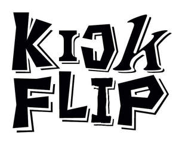

Trade Mark Journal No.2025/014 4 April 2025
UK00004177230 21 March 2025 (21)

International priority date claimed: 30 September 2024
(Republic of Korea)
(40-2024-0180430)
- Class 21
- Hair combs; cosmetic utensils; electric and non-electric aromatic oil diffusers (except reed diffusers); water flossers; toothbrushes; cleaning tools and washing utensils (other than electric); dustbins; ornamental glass spheres; containers for household or kitchen use; kitchen utensils; cooking utensils, non-electric; souvenir plates; lunch pails; drinking steins; mugs; services [dishes], not of precious metal; cups; tumblers for use as drinking glasses; mess-tins; tea cup set; mugs of precious metal; tableware, other than knives, forks and spoons; drinking vessels; containers for foodstuffs; cookery molds; insulated flasks; buckets; signboards of porcelain or glass; commemorative statuary cups of porcelain, ceramic, earthenware, terra-cotta or glass; flower-pot covers, not of paper; indoor terrariums for plants; household containers for storing pet food; tissue box covers; coin banks; dispensers for liquid soap [for household purposes]; basins not being parts of sanitary installations; boxes for sweets; bottles (except vases); place mats, not of paper or textile; vases; glass ornaments; china ornaments; shoe horns; candle holders; eyeglass cleaning cloths; electric mosquito killers; electric make-up removing appliances; electric toothbrushes; household gloves for general use; bath brushes; figurines of porcelain, ceramic, earthenware, terra-cotta or glass; nest eggs, artificial.
JYP ENTERTAINMENT CORPORATION
Representative: Murgitroyd & Company